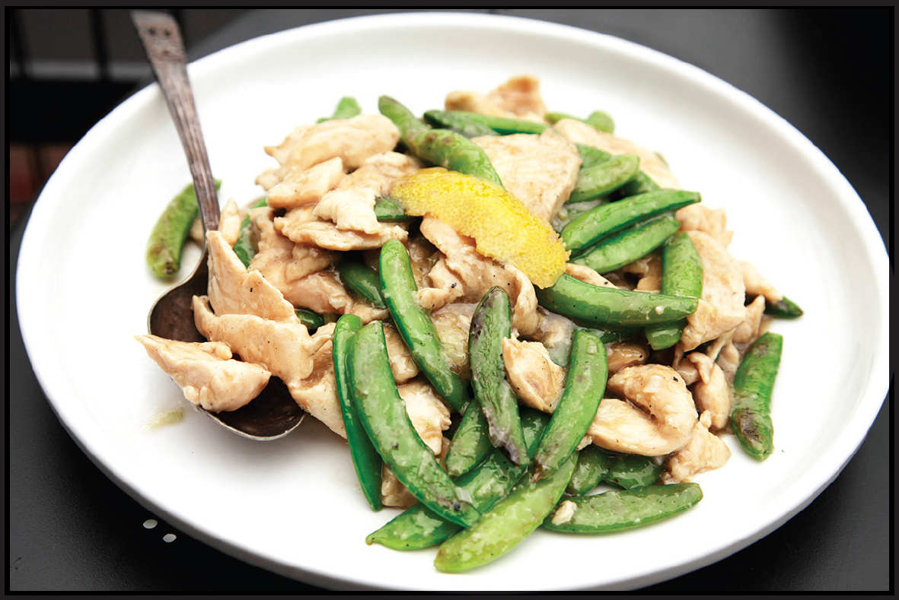

VELVET CHICKEN WITH SNAP PEAS AND LEMON-GINGER SAUCE
|
Yield Serves 4 |
Active Time 15 minutes Total Time 40 minutes |
INGREDIENTS
For the Velvet Chicken and Blanched Snap Peas:
1 pound (450 g) boneless, skinless chicken breasts, cut into ¼-inch slices
1 teaspoon (3 g) kosher salt
4 teaspoons (20 ml) Shaoxing wine or dry sherry
½ teaspoon (2 g) baking soda
1 large egg white
2 teaspoons (6 g) cornstarch
1 pound (450 g) sugar snap or snow peas, trimmed
For the Sauce:
1 tablespoon (15 ml) light soy sauce or shoyu
2 tablespoons (30 ml) Shaoxing wine or dry sherry
¼ cup (60 ml) low-sodium homemade or store-bought chicken stock or water
1 tablespoon (15 ml) fresh lemon juice
1 teaspoon (5 ml) roasted sesame oil
2 teaspoons (8 g) sugar
For the Cornstarch Slurry:
2 teaspoons (6 g) cornstarch
1 tablespoon (15 ml) water
For the Stir-Fry:
3 tablespoons (30 ml) peanut, rice bran, or other neutral oil
4 strips lemon zest removed with a vegetable peeler, about 2 inches long and 1 inch wide
2 teaspoons (5 g) minced garlic (about 2 medium cloves)
2 teaspoons (5 g) minced fresh ginger (about ½-inch segment)
3 scallions, cut into ½-inch segments
Kosher salt to taste

This simple stir-fry showcases the effects of velveting on chicken, which comes out moist and tender with minimal fuss. Unlike some meatier stir-fries, the chicken should get no color at all from Maillard browning; the flavor in this dish is light and bright with an acidic hit from lemon juice and a little heat from both stir-fried ginger and a little fresh ginger added directly with the sauce.
I like the sweet crunch of snap peas, but really any green vegetable of similar size and shape would do. Snow peas, asparagus cut into segments, broccolini or broccoli spears, and cabbage are all prime candidates. You can stir-fry green vegetables straight from raw, but for the brighter green color and better texture, blanch them in some salted water first.
DIRECTIONS
1For the Velvet Chicken and Blanched Snap Peas: Place the chicken in a medium bowl, cover with cold water, and vigorously agitate it. Drain through a fine-mesh strainer set in the sink and press on the chicken with your hands to remove excess water. Return the chicken to the bowl and add the salt, wine, baking soda, egg white, and cornstarch. Stir vigorously with your fingertips or chopsticks for 30 seconds. Let marinate in the fridge for at least 15 minutes and up to 8 hours.
2Bring 2 quarts of salted water to a hard boil in a small saucepan or wok. Add the snap peas and simmer until bright green but still crisp, about 45 seconds. Using a spider, transfer the peas to a wide plate in a single layer and set them aside to cool.
3Let the water return to a hard boil. Add the chicken, dropping it in a piece at a time to prevent sticking. Cook, stirring occasionally, until the water returns to a brief simmer and the chicken is mostly cooked through, 30 to 60 seconds. Transfer the chicken to a rimmed baking sheet using a spider and spread it into a single layer to dry. Set aside. Dump out the contents of the wok and wipe clean.
4Make the Sauce: Combine soy sauce, wine, chicken stock, lemon juice, sesame oil, and sugar in a small bowl and stir together until homogenous. Set aside. Combine the cornstarch and water in a separate small bowl and stir with a fork until the cornstarch is dissolved.
5BEFORE YOU STIR-FRY, GET YOUR BOWLS READY:
6To Stir-Fry: Heat a wok over high heat until lightly smoking. Add the oil and swirl to coat. Add the lemon zest, garlic, and ginger and stir-fry until fragrant, about 10 seconds. Immediately add the scallions, snap peas, and chicken and toss thoroughly to combine. Stir-fry until the chicken is just cooked through and the snap peas are tender-crisp, about 30 seconds.
7Stir the sauce and add to the wok by pouring it around the edges. Stir the cornstarch slurry and add a splash. Cook, tossing, until the sauce thickens and the chicken is cooked through, about 30 seconds longer. Adjust the sauce consistency with more cornstarch slurry if it is too thin or a splash of water if it is too thick. Transfer to a serving platter and serve immediately with steamed rice.